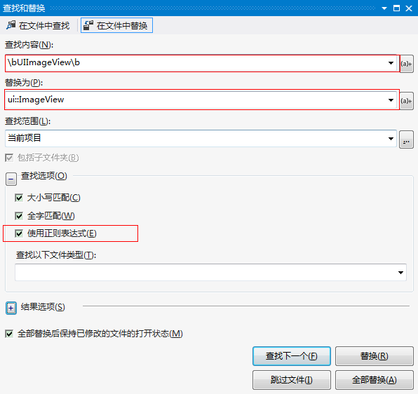

摘要: cocos2dx 是一款优秀的多平台,专为2D游戏设计的引擎. 在活跃的开源社区的推进下, 越发稳定和强大. 2.x -> 3.x的更新幅度很大, 性能的提升和功能的丰富也非常明显. 但在享受进步的同时,也要承受迁徙之苦. 本文主要是总结自己迁徙的经历, 以防大家走弯路.
基础准备
- 我一直把VS当作主开发环境, eclipse和xcode作为特定机型的调试环境. 所以, 偷个懒, 假设你也在用VS开发. 另外两个平台也也都有正则表达式替换功能, 大同小异.
- 在这里, 假设你已经搭好了3.x的VS开发环境, 能正常运行
HelloWorld演示. - 假设你有一定的正则表达式基础. 如果没有的话, 可参考这篇速成教程:正则表达式30分钟入门教程
进入正题
cocos2dx 3.1的简要feature更新介绍可参考这里, 详细的changelog可参考这里.在升级之前, 建议扫一遍changelog( 否则都不知道要做啥…).
接下来, 进入正题啦:
语法更新
本文将有非常多字符串替换的步骤, 都在vs2012中进行. vs2012中字符串替换窗口如下:

本文将上图代表的替换表示为:( 以后将不特殊说明 )
1 | //regex-replace |
obj-c式命名 ==> c++命名空间式命名
以下是常见的替换:
1 | //regex-replace |
注释: \b代表单词的分割符. ()代表被标记的内容, $1 代表原始字符串中被标记的内容中的第一段. 具体请参考在 Visual Studio 中使用正则表达式.
include文件变更
因为包结构的变化, 所以有些组件的定义会未被include.
主要用到的head文件有:
| head | 描述 |
|---|---|
cocos2d.h |
cocos2dx的基本数据类和Node类都包含在里面 |
ui/CocosGUI.h |
cocos2dx 绝大部分的UI类都包含在内. 2.x版本中, UI类都包含在cocos-ext.h中. 所以绝大部分原来引用cocos-ext.h的地方都需要引用此文件 |
cocostudio/CocoStudio.h |
cocostudio功能相关的类都包含在里面. 最主要的是各种读取json文件的Reader. 其次, 是Armature动画. |
cocos-ext.h |
相比2.x的cocos-ext.h, 此文件做了非常大的精简. 现在主要包括CCScrollView及其子类, 另外还有EditBox |
std::function作为监听函数
虽然, 3.1 的版本仍然支持绝大多数老版本的回调函数方式, 比如: m_btnSubmit->addTouchEventListener (this,toucheventselector(RewardItemCell::onBtnSubmitClick));仍然能工作. 但是, 不能保证在将来的3.x版本中仍然如此. 所以, 尽量一次搞定吧. 在obj-c式命名 ==> c++命名空间式命名章节中, 有批量替换的正则表达式,可作为参考.
功能更新
中间层UILayer的去除
在2.x版本, Widget需要作为UILayer的孩子节点才能响应触摸事件; 而在3.x版本中取消了这个限制, Widget的响应机制变为跟Menu类似. 目前, 我也没有大量的去掉之前的UILayer层, 大部分功能仍然正常工作.
键盘响应方式变更
在2.x版本中, 键盘响应的监听是用CCDirector::sharedDirector()->getKeypadDispatcher()->addDelegate(this);实现的. 在3.x版本中是这样:
1 | auto keyListener = EventListenerKeyboard::create(); |
监听的取消, 也要做响应的替换.
Armature的陷阱
在2.x版本中, 一般通过下面的方式来监听Armature的事件. 在监听到COMPLETE的时候, 可以将此Armature移出场景.
1 | CCArmature* swf = CCArmature::create(swfName); |
但是在3.x中, 我们不能在监听事件的回调函数中做任何可能会导致release此对象的操作. 否则, 会导野指针错误.
是不是有点鸡肋? 我们来看看这种情况是怎么发生的:
1 | Scheduler->Armature:update(t) |
我临时用定时器来移除Armature的. 具体过程如下:
- 为
ArmatureAnimation增加一个公开函数:virtual MovementData *getMovementData() const { return _movementData; } - 通过下面的方式来移除: (PS: Lmada 表达式真是好用啊啊啊啊啊 )
1 | auto data = swf->getAnimation()->getMovementData(); |
更加优雅的anchorPoint
如果你加载了cocostudio生成的ui json文件, 并改动过内部Widget的位置的话, 你会发现, 代码中x=20跟cocostudio ui编辑器中x=20效果是不一样的.
问题出在哪里呢?
简单来说, 2.x版本中的anchorPoint对自己在父亲节点的位置和孩子节点在自己中的位置都有影响; 3.x版本中的anchorPoint只对自己在父亲节点中的位置有影响.
举个例子. 假设A是父亲节点,B是A的孩子节点. A和B同为10*10的正方形.
1 | A.anchorPoint = Point(0.5,0.5); |
在2.x版本中: A和B的位置完全重合
在3.x版本中: B的中心点和A的左下角的点重合.

Sprite的默认GLProgram
什么?你没听过GLProgram, 那恭喜你, 可以跳过这小节了. 因为你肯定不会出现下面的恼人情况.
SHADER_NAME_POSITION_TEXTURE_COLOR是2.x版本中的默认GLProgram. 它对应的vect和frag分别是:ccPositionTextureColor_vert和ccPositionTextureColor_frag. vect用来确定位置,frag用来确定色彩.
然而, 在3.x版本中,默认的GLProgram是SHADER_NAME_POSITION_TEXTURE_COLOR_NO_MVP, 对应的vect和frag分别是:ccPositionTextureColor_noMVP_vert和ccPositionTextureColor_noMVP_frag.
如果你恰好用过ccPositionTextureColor_vert的话, 建议改为ccPositionTextureColor_noMVP_vert. 否则会出现莫名的位置偏移问题.
stl::vector的不稳定排序导致的层级问题
2.x版本中, 如果没有对孩子设置过zOrder的话, 孩子节点的覆盖顺序为: 后加的节点在上层, 先加的节点在下层.
3.x版本中, win32环境下, 孩子节点的覆盖层级还能保续. 但是在android平台下, zOrder相同的孩子, 层级顺序是随机的. 关键在下面的代码:
1 | void Node::sortAllChildren() |
win32和android平台对stl::sort()的实现不同, android下的排序算法不是稳定的. 解决方法:
- 修改上述代码, 实现稳定排序
- 添加孩子节点的时候手动设置
zOrder来保证层级顺序.
umeng等第三方库的更新
第三方库, 也有很多跟cocos2dx版本相关. 注意升级, 否则会闪退.